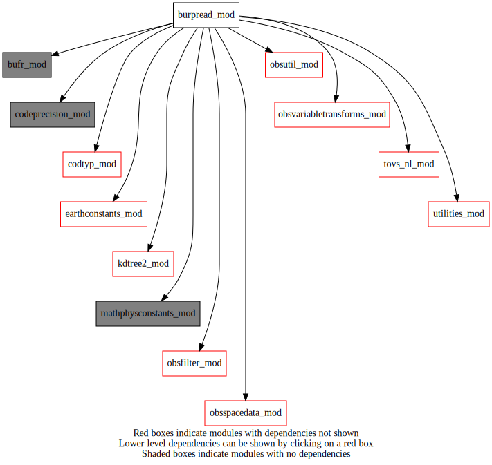
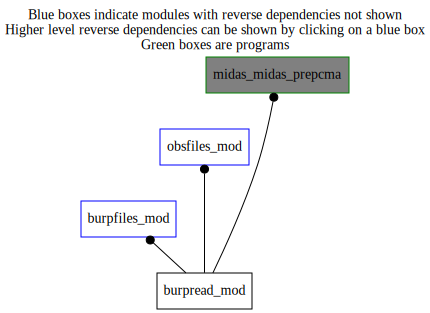

Dependency Diagrams:
 Direct Dependency Diagram¶
 Reverse Dependency Diagram¶
Description
MODULE burpread_mod (prefix=’brpr’ category=’3. Observation input/output’)
- Purpose
To read and update BURP observation files. Data is stored in obsSpaceData object.
Quick access
- Routines
brpacma_nml(),brpr_addcloudparametersandemissivity(),brpr_addelementstoburp(),brpr_burpclean(),brpr_gettyperesume(),brpr_readburp(),brpr_updateburp(),brpr_updatemissingobsflags(),find_index(),getburpreportaddresses(),getelementidsread(),isflagblock(),isgroupeddata(),isobsblock(),setinfotomissing(),write_al(),write_body(),write_header(),write_qi(),writeinfo()Needed modules
codeprecision_mod: MODULE codePrecision_mod (prefix=’pre’ category=’8. Low-level utilities and constants’)
bufr_mod: MODULE bufr_mod (prefix=’bufr’ category=’8. Low-level utilities and constants’)
burp_module
obsspacedata_mod: MODULE obsSpaceData_mod (prefix=’obs’ category=’6. High-level data objects’)
mathphysconstants_mod: MODULE MathPhysConstants_mod (prefix=’mpc’ category=’8. Low-level utilities and constants’)
earthconstants_mod: MODULE earthConstants_mod (prefix=’ec’ category=’8. Low-level utilities and constants’) Prefixes: ec_ (Earth constants), for miscellaneous values from diverse sources
utilities_mod: MODULE utilities_mod (prefix=’utl’ category=’8. Low-level utilities and constants’)
obsutil_mod: MODULE obsUtil_mod (prefix=’obsu’ category=’3. Observation input/output’)
obsvariabletransforms_mod: MODULE obsVariableTransforms_mod (prefix=’ovt’ category=’4. Data Object transformations’)
obsfilter_mod: MODULE obsFilter_mod (prefix=’filt’ category=’5. Observation operators’)
tovs_nl_mod: MODULE tovs_nl (prefix=’tvs’ category=’5. Observation operators’)
kdtree2_mod: MODULE kdtree2_mod (prefix=’kdtree2’ category=’8. Low-level utilities and constants’)
codtyp_mod: MODULE codtyp_mod (prefix=’codtyp’ category=’8. Low-level utilities and constants’)Variables
Subroutines and functions
- function burpread_mod/brpr_gettyperesume()¶
- Return
brpr_gettyperesume [character ]
- Called from
- subroutine burpread_mod/brpr_updateburp(obsdat, familytype, brp_file, filenumb)¶
- Purpose
To update variables relative to assimilation in burp files
- Arguments
obsdat [struct_obs ,inout] :: obsSpaceData object
familytype [character ] :: type of family(‘UA’,’SF’,’AI’,’SW’,’TO’, …)
brp_file [character ] :: name of burp file
filenumb [integer ]
- Called from
- Call to
brpacma_nml(),utl_abort(),obs_numheader(),obs_headelem_i(),find_index(),obs_elem_c(),obs_bodyelem_i(),obs_bodyelem_r(),obs_columnactive_rb(),kdtree2_destroy(),kdtree2_create(),kdtree2_r_nearest(),codtyp_get_codtyp()
- subroutine burpread_mod/brpacma_nml(nml_section[, besilent_opt])¶
- Arguments
nml_section [character ]
- Options
besilent_opt [logical ]
- Called from
- Call to
- subroutine burpread_mod/brpr_readburp(obsdat, familytype, brp_file, filenumb)¶
- Purpose
Select variables relative to airs in burp file. Read burp file.
- Arguments
obsdat [struct_obs ,inout]
familytype [character ]
brp_file [character ] :: name of burp file
filenumb [integer ]
- Called from
- Call to
brpacma_nml(),utl_abort(),ovt_setup(),obs_getnclassavhrr(),obs_getnchanavhrr(),write_body(),write_header(),obs_numheader(),obs_headset_i(),obs_columnactive_ih(),obs_setfamily(),obs_headelem_i(),writeinfo(),setinfotomissing(),write_qi(),write_al(),obs_columnactive_rh()
- function burpread_mod/write_body(obsdat, famtyp, elev, vertcoord, vcoord_type, obsvalue, qcflag, nele, nval, liste_ele, dataqcflaglev, datacloudfraclev, rolat, rolon[, surf_emis_opt[, biascorrection_opt]])¶
- Arguments
obsdat [struct_obs ,inout]
famtyp [character ]
elev [real ]
vertcoord (*) [real ,allocatable]
vcoord_type [integer ]
obsvalue (*,*) [real ,allocatable]
qcflag (*,*) [integer ,allocatable]
nele [integer ]
nval [integer ]
liste_ele (*) [integer ]
dataqcflaglev (*) [integer ,in]
datacloudfraclev (*) [integer ,in]
rolat (*) [real ]
rolon (*) [real ]
- Options
surf_emis_opt (*) [real ,allocatable]
biascorrection_opt (*,*) [real ,allocatable]
- Return
write_body [integer ]
- Called from
- Call to
obs_numheader(),obs_numbody(),utl_abort(),obs_bodyset_i(),obs_columnactive_rb(),filt_bufrcodeassimilated(),ovt_bufrcodeskipped(),ovt_getdestinationbufrcode(),ovt_iswindobs()
- subroutine burpread_mod/write_header(obsdat, stnid, lat, lon, date, time, codtyp, status, elev, filenumb[, phase_opt])¶
- Arguments
obsdat [struct_obs ,inout]
stnid [character ]
lat [real ]
lon [real ]
date [integer ]
time [integer ]
codtyp [integer ]
status [integer ]
elev [real ]
filenumb [integer ]
- Options
phase_opt [integer ]
- Called from
- Call to
obs_numheader(),obs_headset_i(),obs_set_c(),obs_columnactive_ih()
- subroutine burpread_mod/write_qi(obsdat, qi1value, qi2value, mtvalue, lsvalue, havalue, gavalue)¶
- Arguments
obsdat [struct_obs ,inout]
qi1value [integer ]
qi2value [integer ]
mtvalue [integer ]
lsvalue [integer ]
havalue [integer ]
gavalue [integer ]
- Called from
- Call to
- subroutine burpread_mod/write_al(obsdat, azimuth)¶
- Arguments
obsdat [struct_obs ,inout]
azimuth [real ]
- Called from
- Call to
- subroutine burpread_mod/writeinfo(obsdat, famtyp, rinfo, liste_info, nele_info)¶
- Purpose
Write values in obsSpaceData related to the info block
- Arguments
obsdat [struct_obs ,inout]
famtyp [character ]
rinfo (nele_info) [real ]
liste_info (nele_info) [integer ]
nele_info [integer ]
- Called from
- Call to
obs_numheader(),obs_headelem_i(),utl_abort(),obsu_cvt_obs_instrum(),obs_headset_i(),obs_columnactive_ih(),obs_columnactive_rh()
- subroutine burpread_mod/setinfotomissing(obsdat)¶
- Purpose
Set the obsSpaceData column related to the info block with missing values
- Arguments
obsdat [struct_obs ,inout]
- Called from
- Call to
obs_numheader(),obs_headset_i(),obs_columnactive_ih(),obs_columnactive_rh()
- function burpread_mod/find_index(list, element)¶
- Arguments
list (*) [integer ]
element [integer ]
- Return
find_index [integer ]
- Called from
- subroutine burpread_mod/brpr_addcloudparametersandemissivity(obsspacedata, fileindex, burpfile)¶
- Purpose
Add to the input BURP file number fileIndex cloud parameters and emissivity.
- Arguments
obsspacedata [struct_obs ,inout] :: obsSpacedata structure
fileindex [integer ,in] :: number of the burp file to update
burpfile [character ,in]
- Called from
- Call to
obs_getheaderindex(),obs_headelem_i(),tvs_isidburphyperspectral(),utl_abort(),obs_headelem_r(),tvs_changedstypvalue(),obs_bodyelem_r(),tvs_isidburpinst(),tvs_isinstrumallskyttassim(),tvs_getinstrumentid(),codtyp_get_name(),tvs_isinstrumallskyhuassim()
- subroutine burpread_mod/brpr_updatemissingobsflags(burpfile)¶
- Purpose
Open burp file and set missing data flags to 2048.
- Arguments
burpfile [character ,in]
- Called from
- subroutine burpread_mod/brpr_addelementstoburp(inputfilename, familytype[, besilent_opt])¶
- Purpose
to add element(s) for bias correction to data block of DERIALT BURP file
- Arguments
inputfilename [character ,in]
familytype [character ,in]
- Options
besilent_opt [logical ]
- Called from
- Call to
utl_isnamelistpresent(),utl_abort(),codtyp_get_name(),tvs_getinstrumentid(),tvs_isinstrumusingclw(),tvs_isinstrumusinghydrometeors(),tvs_isinstrumallskyttassim(),tvs_isinstrumallskyhuassim(),isobsblock(),isflagblock()
- subroutine burpread_mod/brpr_burpclean(inputfilename, familytype)¶
- Purpose
to remove observations that are flagged not to be assimilated
- Arguments
inputfilename [character ,in]
familytype [character ,in]
- Called from
- Call to
getburpreportaddresses(),isgroupeddata(),getelementidsread(),isflagblock(),isobsblock()
- subroutine burpread_mod/getburpreportaddresses(filename, addresses)¶
- Purpose
Initial scan of file to get number of reports. Store address of each report in array addresses(numReports).
- Arguments
filename [character ,in]
addresses (*) [integer ,inout,allocatable]
- Called from
- function burpread_mod/isgroupeddata(burpfile, address)¶
- Arguments
burpfile [burp_file ]
address (*) [integer ]
- Return
isgrouped [logical ]
- Called from
- Call to
- function burpread_mod/isflagblock(familytype, btyp)¶
- Arguments
familytype [character ]
btyp [integer ]
- Return
isflag [logical ]
- Called from
- function burpread_mod/isobsblock(familytype, btyp)¶
- Arguments
familytype [character ]
btyp [integer ]
- Return
isobs [logical ]
- Called from
- subroutine burpread_mod/getelementidsread(familytype, elementids)¶
- Arguments
familytype [character ]
elementids (*) [integer ,allocatable]
- Called from
- Call to
{kind=link}
{kind=link}